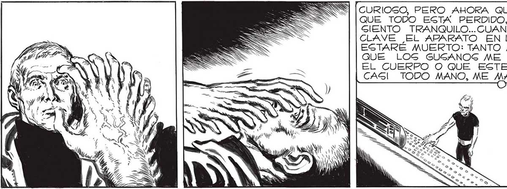

154 ¡AUNQUE PREFIERO MORIR! ¡61! ¡MATENME, POR PIEDAD, | PERO NO ME CLAVEN EL 2 TRATA DE CALMARTE, UN, MINUTO MAS Y GE-PM [PEOR QUE UN PERRO AMAES JUAN... ES INÚTIL DESES- ] MrRAS UN HOMBRE-ROBOT Pl] | TRADO..¡UNA SIMPLE MAQUIPERAR... DE_TODOG MO: COMO LOS OTROG..UNA PM | NA! PERO _CALMATE, JUAN... YO AULLABA CC ÍPOR PIEDAD! ¡NOS ENLOQUECIDO DOS. YA ESTAS PERDIDO.. | | lecpecie DE PERRO YA NADA PUEDES HACER .. A ¡POR PIEDAD! ¡NO! POR, DENTISO. COMO Cl HUBIERAS MUER AMAEGTRADO.. k | TO... JESSE ON ASS GOLO SONIDO GALA DE MI GARGANTA PARALIZADA . NUNCA , NUNGA IMAGINÉ QUE LA MUERTE PUDIERA ANHELARSE TANTO... SABRAS POR FIN QUÉ ASPEG TO TIENEN..PERO YA DE NADA TE SERVIRA, EL CONOCIMIENTO... ¡| AHÍ VIENE 1573333] A — () : GOLO TE QUEDA AHORA MIRAR A TU VENCEDOR... MIRAR DE CERCA A UNO DE LOGS SUPERASESINOG DE NUESTRA RAZA, A UNO DE LOS VERDADEROS INVASORES... CURIOSO, PERO AHORA QUE SE QUE TODO ESTA PERDIDO, YA ME GIENTO TRANQUILO... CUANDO ME CLAVE EL APARATO EN LA NUCA ESTARE MUERTO: TANTO ME DA QUE LOGS GUSANOS ME COMAN EL CUERPO O QUE ESTE SER CAGI TODO MANO, ME e aia
